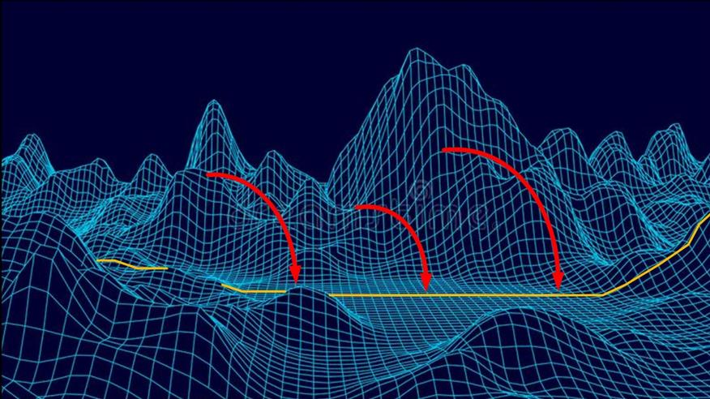

This particular article discusses “slides”. These are a method to change the pre-birth world-line template to something else. In this article, we will use an example for illustration.
Quick review
There are a lot of newcomers to MM. Some come for the articles on Geo-Political stuff, some come for the articles about pretty girls.
Some come for the OOPART and space articles, and still others come for the prayer affirmation articles.
Some come for the articles on MAJestic and all that black ops stuff, and others for exterrestrial stuff.
While others come for the poetry, art and food articles.
This article fits somewhat between the “world line travel” index and the “affirmation prayer index”. It’s a way of changing your life by understanding quantum mechanics / quantum physics.
Listen up!
The reality that you are part of is not what it appears. What you see is what your limited five senses provide to you, and thus you have a distorted view of reality. It is not the true and actual reality.
For starters, You are not sharing the universe with others. It only looks that way.
Instead, you have a consciousness that moves from one frozen world-line to another. And you sense that movement as “time”.
You travel at roughly 4Hz, and that means for every second, you have traveled through four frozen world-lines.
You can navigate these frozen world-lines though vocalized thoughts. Not thoughts alone, mind you, but though the vocalization of your thoughts.
When you are born, you land upon a predetermined world-line map. It’s a three-dimensional map, with the highest probability world-lines represented as points upon that flat map surface. The relative ease of movement can be drawn upon that map, and hills and valleys form upon that map, representing the relative struggles and ease that you will experience though life.
Navigation through this terrain is though something called “prayer affirmation campaigns”.
It looks something like this
Your consciousness experiences “time” as the movement though each point on a flat surface. Obviously you can get off that surface, but it is rather difficult. The surface represents the easiest path of the least resistance for you. Now you can navigate on the topography by vocalized thoughts.

This article
Now, a “slide” is an intentional effort to “slide off” your template and to get on to a different one. As in all cases, it comes with good and bad aspects.
A graphic depiction of a slide.

So imagine that you are living a life that you are unhappy with, and you really want it to change. The solution, if you cannot navigate on the topography of your world-line template, is to slide off of it.
Now, when you do so, you will see all sorts of unique and different changes. Some of which are startling. Like, for instance, entirely different pasts that everyone around you experiences, but that you have no recollection of.
A good example
This article came to me by an influencer via my email. Printed with permission and edited to fit the venue, retain confidentiality, and illustrate points.
The letter…
MM I really feel the need to tell you this. After I wrote to you the last time, something happened. I decided to take the longer pause, just like you suggested...
A “pause” is an intentional break-off from the affirmation campaign so that the world-line changes can actually manifest.
What you want to do is have long pauses and not short ones.
In this instance, I defined a longer pause associated with his campaign duration.
And I wondered what that plus knowing that I’m in your prayers would do. Well within a week my mom got a call from my aunt in America in which my aunt told her that she had to undergo a very heavy surgery for cancer. My mom and I talked about that whole situation, including how my aunt is a health freak and all. And that my mom felt really bad about not being able to visit my aunt do to her problems walking and being short of breath. Besides that, my mom is full of life and very healthy by the way and still making YouTube vids and running her store. My mom has her birthday today and my aunt tomorrow. Well I tried to not worry. And let things be after first hearing off my aunt’s condition.
Now what is going on is that a family member is really sick and ill. It is causing a lot of upset and turmoil.
They fear for her life.
And this fear generated a change in the affirmation campaign; to actually change the entire conditions so that things weren’t so awful.
Just 15 minutes ago, I asked my brother if our mom is going to call my aunt tomorrow and ask about her situation. Well at that point my brother says ; oh mom already talked to aunt Julia and everything is fine with Françoise. I’m like eh, what about Françoise? (That is by the way, my aunt’s daughter.) My brother says well it was only a minor surgery for Françoise to the point that she doesn’t even need chemo.
So what we see is that you are on a template where a family member is suffering from Cancer and requires Chemo therapy.
So…
You run an affirmation campaign with longer post campaign pauses, and suddenly you are on a new template.
One, mind you, where the cancer is replaced with a minor chest cold (or some such thing).
(so) I say eh, aunt Julia was really sick and needed major surgery and all. My brother looks at me like what are you talking about. It was about Françoise, and it turns out aunt Julia was exaggerating.
This kind of event happens all the time on a slide event sequence. One moment the world is coming apart, and then when the slide manifests, it is all different. The past has been rewritten.
So now, he sees what is going on…
At that point, I was completely flabbergasted and started to realize something big changed in my world line. But I did question my brother about some of the things we all discussed. Like me mentioning that our mom was bummed about her sister and how she would probably not see her again. At that point my brother did say, "oh yeah, I did seem to remember the talk a couple of weeks ago was about my aunt and not her daughter." My brother then shrugged, that of and said "well I guess we all misinterpreted the whole talk with my aunt" Yeah right. I know my world line changed. And thank you very, very much. I’m still processing this, but, damn. Again, thank you so much for everything.
This is how it works.
Not only does your fortunes change, but often the past histories all are different.
In fact, I can confirm positively that if you start experiencing different past histories, then you KNOW that you have slid onto a different world-line template.
Consider “The Craft”
This is a movie that has a scene that well illustrates how a slide operates. The movie is titled The Craft (1996). It’s about witches and black magic. But ignore all that. Instead we use it here to illustrate how a prayer campaign can alter a world-line template.
Sarah Bailey (Robin Tunney), a troubled teenage girl who has previously attempted suicide, has just moved from San Francisco to Los Angeles with her father (Cliff De Young) and stepmother. She enrolls in a local Catholic high school, but has trouble fitting in. During French class, her classmate Bonnie (Neve Campbell) witnesses Sarah telekinetically causing a pencil to rotate while standing on its tip.
During lunch, Sarah is hit on by Chris (Skeet Ulrich), the school’s football star. She asks about Bonnie and her two friends Nancy (Fairuza Balk) and Rochelle (Rachel True). Chris tells Sarah to stay away from the trio, because “they’re witches”. Bonnie tells Nancy and Rochelle that Sarah is the “fourth” who will complete their circle and make a full coven. The three girls each have issues: Nancy lives in a trailer with her mom, Grace Downs (Helen Shaver) and abusive stepfather Ray (John Kapelos) , Bonnie has massive burn scars all over her back, and the painful treatment recommended by the surgeon (Brenda Strong) is likely to fail. Insecure African American athlete Rochelle is subjected to racist taunts by the most popular girl in school, blonde Laura Lizzie (Christine Taylor).
After school, the three girls befriend Sarah and take her to an occult shop. The owner, Lirio (Assumpta Serna), comments that Sarah is not like the other girls and says to her: “Maybe you are a natural witch; your power comes from within.” While leaving the shop, Sarah is harassed by a vagrant (Arthur Senzy), and all four girls simultaneously will for something to happen; the vagrant is then hit by a car. The girls escape, and Nancy is thrilled at their “connection”. Nancy tells Sarah about “invoking the Spirit” Manon, which is their ultimate goal as a coven.
Sarah leaves the girls to meet Chris, but refuses to have sex with him. However, at school the next day, Sarah discovers that Chris boasted to the whole school that they slept together, and that she was the worst he’s ever had. Nancy, Bonnie and Rochelle comfort Sarah, and invite her on a field trip. They take the bus out to the country. The bust drivers tells them to be careful about wicked boys, but they say that they four are the dangerous ones. While on the countryside, they call the corners and cast some spells: Rochelle asks for the strength not to hate those who hate her, Sarah performs a love spell on Chris, Bonnie asks for beauty inside and out, and Nancy asks for “all the power of Manon.”
Shortly after the spells are cast, they show signs of working: Chris becomes infatuated with Sarah and goes after her constantly in spite of his friends Mitt (Breckin Meyer) and Trey (Nathaniel Marston) taunting him about it, Bonnie’s scars miraculously heal, and the next time Laura bullies Rochelle, Laura’s hair begins falling out. At home, Nancy causes the microwave and all light bulbs to explode, and Ray suffers a massive heart attack and dies.
Then Nancy and her mother are told by the insurance man (Brogan Roche) that they have inherited $175,000 from an insurance policy, and they feel overjoyed about it. Nancy and her mother move into a posh high-rise where the girls meet one night and learn disguise-changing magic.
Nancy’s mother looks confused and dazzled. She has bought a weird-coloured sofa and a jukebox with only songs by Connie Francis. The four friends lock themselves in Nancy’s room ignoring Nancy’s mother, who is left empty and ignored, just as she felt before cashing in on the insurance money.
The girls go to Lirio’s shop again, where Nancy finds a book about “Invoking the Spirit”.
Later that night, the girls go to the beach and form a circle, calling on Manon. At the culmination of the spell Nancy is struck by lightning. The next day the rest of the girls witness Nancy walking on the water, and from this point on, Nancy’s powers have increased.
Later on, Rochelle sees a balding Laura in the locker room, hysterically sobbing after swim practice. Laura’s two closest friends (Elizabeth Guber and Jennifer Greenhut) try to offer some consolation, to no avail. Rochelle feels remorse for the spell she has cast and when she looks in the mirror at herself, her reflection looks away.
Sarah’s love spell also backfires on her. She finally accepts to have a dinner date with Chris, but he takes her to the top of a hill and attempts to rape her.
Sarah runs away and knocks on Nancy’s door. Nancy leaves her home for a party Chris is attending in order to punish him. However, when she arrives to the party, she tries to seduce Chris by disguising herself as Sarah, but when the real Sarah arrives as they engage in foreplay, Nancy causes Chris to fall out a third-story window, killing him.
On consequence of this, Sarah starts having nightmares concerning her old friends, and feels like they’re following her everywhere to torment her. She tries to stop Nancy – who has become the leader of the three remaining coven witches – by binding her powers so that she won’t be able to hurt other or herself, but this does not work and the three other coven girls now hate Sarah.
Nancy appears and tells Sarah that in the old days, if a witch betrayed her coven, they would kill her.
Needing help, Sarah goes to Lirio, who tells her to invoke the spirit herself. Lirio also reveals that Sarah’s mother was a powerful witch, and that her talent has passed on to Sarah.
Sarah starts to invoke Manon, but she has a vision of fire and the shop exploding, so she leaves the shop absolutely terrified..
Sarah returns home, where she is tormented by Nancy, Bonnie and Rochelle, who taunt her using magic and intimidate her with threats on her life. Sarah arrives home and nobody is there.
She is instructed to turn on the TV set and listens that her family went back to San Francisco thinking that she had run away there, and that their plane had had an accident without any survivors.
On this template, the parents of the one girl are killed.
Without a second of rest, all kinds of snakes and worm appear everywhere. The three other coven girls then appear. After a few seconds of intimidation Nancy says that Sarah will commit suicide.
Nancy later slashes Sarah’s wrists and a letter on Sarah’s handwriting stating the reasons of her suicide magically appear – blaming herself for Chris’ death. Sarah runs to her room, while Nancy, Bonnie and Rochelle wait for her to die. Rochelle then tells Nancy that this has gone out of hand. Nancy tells her to go upstairs to check on Sarah and threatens to slit her throat if she doesn’t.
Bonnie pulls up Rochelle to Sarah’s room. Sarah is almost too weak to invoke Manon, but then she hears her mother (Janet Eilber) moving in an old photograph and her sweet voice whispering, “Don’t be afraid. Reach inside yourself”.
Sarah successfully invokes Manon and is able to cast spells to fight back, as well as heal the injuries to her wrists.
The girl conducts an Affirmation Prayer campaign to arrange a slide and change the entire template to her favor.
Forced by a counter spell of Sarah’s to see themselves and what they’ve become by catching their reflections in a mirror, Bonnie’s face horribly scarred and Rochelle’s hair falling out, Bonnie and Rochelle flee, leaving only Nancy and Sarah at home.
Nancy and Sarah have a showdown, in which Nancy is ultimately defeated by Sarah as she binds Nancy’s power to prevent her from doing any more harm.
In the end, Nancy has been sent to a psychiatric hospital, and Bonnie and Rochelle lose any powers they had.
They go to see Sarah and half-mockingly tell her not to be angry with them because when Sarah was made to believe that her family had died it was just an illusion. Sarah’s father is packing everything in his car to move out of LA.
The new template has a new past and everything is changed. And the parents were not killed in a plane accident.
The two girls ask Sarah if she still has any powers, and when she shows no interest in continuing a friendship with the two girls who tried to kill her, they make fun of her as they leave, saying, “She probably doesn’t have powers, anyway”.
On hearing this Sarah makes a bolt of lightning strike causing a tree branch to fall, nearly crushing the two girls, revealing that she still has powers.
As they stare back at her in shock, Sarah warns them, “Be careful. You don’t wanna end up like Nancy”, and smiles.
The scene cuts to a bird’s eye view of Nancy’s room in the psychiatric hospital. She is screaming like a maniac, telling the nurse (Esther Scott), “He gave me powers! I can fly, I’m flying, I’m flying, I’m flying!”
The Craft movie trailer
Why not? video 46MB
the craft preview-2022-02-06_11.31.08
A funny example
An example of what happens when you end up taking a slide. It’s a funny video, but it illustrates the point nicely.
A slide will set up conditions that act like armor. Of course, other things might be out of whack, but your prayer affirmations will manifest in strange, maybe funny ways.
So…
What drove all this change?
I like to believe it was changing the affirmation campaign to incorporate a much larger “pause” period.
The Importance of “the pause”
I have mentioned that for Intentions and Prayers to work that you must engage a system of intensive prayer, followed by an equally intensive pause.
This pause is not just a mere end of praying, it is a complete shut-down of the mind in regards to that prayer campaign. You need to turn everything off and forget about it all. You just cannot go back “looking over your shoulder” ever few days to see if things are ‘”working”. You must give it up, and you must forget about it all.
The best campaigns are the ones where you absolutely forget your affirmation text.
Life moves on.
You go have a pizza. You hang out with friends, and then you go to work, and you do your business. You mow the lawn, fix and repair the house. You do the dishes, you vacuum the car and take it to a car wash. You buy new clothes and you go to church.
Life goes on, and you completely forget about your prayer campaign.
I am sure that other people who have conducted prayer campaigns would agree with me. For it to work, you must separate yourself from your intention prayer campaign and move on with your life.
This is absolutely critical.
You MUST do it.
If you do not do it, the intention prayer campaign will not engage and you will not see any results.
How long?
A minimum of three months. That is minimum. Often, I would advise between four and nine months. This is where you live your life. This is where you forget about intention and allow your brain to engage the programming that you set in place. This is where you get to relax and let things happen.
Think of yourself and your life as a wind-up toy.
The intention prayer campaign is the period where you are winding and winding up the mechanical toy.
The period of the “pause” is when you put the mechanical contrivance on the floor and press the “unwind” button. Then you just watch the toy do its thing…
Now…
Using that analogy.
What happens when all you do is wind up the toy? You wind and wind and wind, over and over, but never press the button?
Nothing happens!
You need to “pause” and press that “pause” button to allow those intention prayers to manifest and happen.
So what is the point?
If you try to push and strive to do the more or less uncomfortable things in your life, you will actually, in the long term, make your life run smoother.
The human brain is a machine that doesn’t like to think. It just wants to run on auto-pilot. As such, when you run affirmation prayer campaigns, your brain and mind will want you to just keep doing the same things over and over without a break.
Don’t do that.
To change your reality, you must control your mind.
Instead of always going to and from work in your car, how about taking a little detour one day, and pulling into a diner and getting their blue plate special. It’s not a real mountain, but it’s a sizable hill. And it will make a difference.
If you always go and get McDonald’s coffee and then come home, how about next time bringing a creamer and a stirrer for your little kitties at home.

If you always eat at that restaurant down the street and order the food that you have become comfortable with, how about trying a different restaurant elsewhere. Maybe you will not like the food. So what? The mere fact that you step outside of the limitations of comfort means that you are climbing those hills.
And it doesn’t have to be hard, difficult, or distasteful either. It just should be different…

If you want change, then get out of your comfort zone…
Which pretty much is a central theme in all of this.
It doesn’t need to be much. But any change is good because it means that you are moving away from the common, and towards more interesting objectives.
I would suggest small steps…
If you are wearing a corporate uniform of a white shirt and a red tie, then replace one of the white buttons on the shirt with a green one. (Oh, boy! Will that make a difference!) . Go to a animal shelter and adopt another furry friend to your household. . Go one week soda free (if your habit is to drink soda). . If you always use the regular gas, next time put high-test in the car. Go with the "good stuff". And have the gas station attendant put it in your tank, chek the oil and the air in your tires. Pay premium for preminum service. DOn't be the like all the rest. . Buy a cup of coffee for a co-worker. . Put a thank-you note in your mailbox for the mailman. (Mail-person?) . Add some "whimsy" to your front lawn, or change the paint on your front door. Make it bright Red, or lime green, or Robin's egg blue. . Plant a tree in your yard. . Visit a place that you haven't been to "in ages".
You see, it’s not that difficult to make changes. You just need to try something new and different.
Swap out the mind pre-programming, and spend more time on “pause”.
And a longer “pause” at the end of the affirmation campaign will make a very large difference in the manifestation of your goals and wishes.